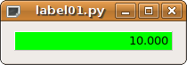

TaurusValueLabel¶
-
class
TaurusValueLabel(parent=None, designMode=False, background='quality')[source]¶ Bases:
PyQt4.QtGui.QLabel,taurus.qt.qtgui.base.taurusbase.TaurusBaseWidgetA widget that represents the read value of an attribute.
Deprecated since version Use:
taurus.qt.qtgui.display.TaurusLabelinstead.The following features are present:
- The background color changes with the attribute quality according to the Taurus color guide
- The attribute value is displayed according to the attribute format
- Supports all data types and formats (although it is designed mainly for SCALAR format)
- A tooltip is automatically generated displaying additional attribute information
- If the size of the widget is too small to display the entire value, the text changes to a symbolic link that opens a dialog with the attribute value when clicked
This widget emits the following signals (excluding signals of the super classes):
- modelChanged:
- Signature:
modelChanged(const QString &) -> None - Description: the signal is emmited when the model for this widget changes either by direct model manipulation, change of the useParentModel and change of the parent model (if useParentModel is set to True)
- Signature:
Example:
import sys from taurus.external.qt import Qt from taurus.qt.qtgui.display import TaurusValueLabel app = Qt.QApplication(sys.argv) w = TaurusValueLabel() w.model = 'sys/taurustest/1/position' w.setVisible(True) sys.exit(app.exec_())
-
handleEvent(evt_src, evt_type, evt_value)[source]¶ reimplemented to check that the display fits the size each time that the value changes
-
model¶ This property holds the unique URI string representing the model name with which this widget will get its data from. The convention used for the string can be found here.
In case the property
useParentModelis set to True, the model text must start with a ‘/’ followed by the attribute name.Access functions:
TaurusBaseWidget.getModel()TaurusValueLabel.setModel()TaurusBaseWidget.resetModel()
See also
-
setShowState(showState)[source]¶ Whether or not to show the device state as background color. Note: obviously, setShowState(True) forces setShowQuality(False) !
-
setShowValueStateAsBackground(showState)[source]¶ Whether or not to show the value as background color. The attribute value must be a state! Note: obviously, forces setShowState(False) and setShowQuality(False)
-
showQuality¶ This property holds whether or not this widget should fill the background with the attribute quality/device state according to the Taurus color guide
Access functions:
TaurusBaseWidget.getShowQuality()TaurusBaseWidget.setShowQuality()TaurusBaseWidget.resetShowQuality()
See also
-
showText¶ This property holds whether or not this widget should display the current value of the model as text. Setting this to False is useful when you just want to represent the quality/state as background color in a small space
Access functions:
TaurusBaseWidget.getShowText()TaurusBaseWidget.setShowText()TaurusBaseWidget.resetShowText()
-
taurusPopupMenu¶ This property holds the contents of a the popup menu as an XML string.
Access functions:
TaurusBaseWidget.getTaurusPopupMenu()TaurusBaseWidget.setTaurusPopupMenu()TaurusBaseWidget.resetTaurusPopupMenu()
See also
-
useParentModel¶ This property holds whether or not this widget should search in the widget hierarchy for a model prefix in a parent widget.
Access functions:
TaurusBaseWidget.getUseParentModel()TaurusBaseWidget.setUseParentModel()TaurusBaseWidget.resetUseParentModel()
See also